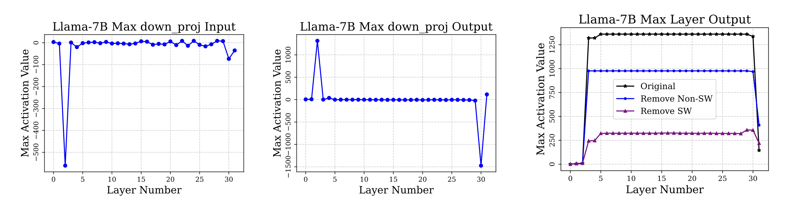
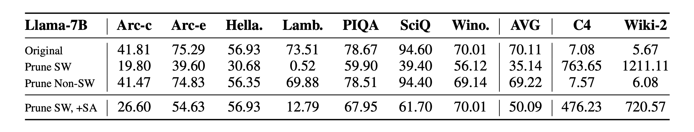

https://arxiv.org/abs/2411.07191
- Outliers with large magnitudes in LLMs significantly impact model performance.
- A single parameter can cause a boost in perplexity. The most important outliers are less than 0.01% of the total parameters.
- These super weights can be identified with just one forward pass.
- These super weights cause rare and large activation outliers, termed super activations. This means that the output of a Transformer layer will occasionally have a particularly large dimension.
- Preserving high precision for these very rare super weights can maintain the performance of the quantized model.
Existing Methods
There are two main categories of quantization methods:
- Weight-only quantization
- Weight-activation quantization
Weight-only Quantization Techniques for Mitigating Outlier Effects
- Reducing the number of parameters grouped together can minimize the impact of outliers.
- AWQ: Scaling sensitive weights via a grid-searched channel-wise scaling.
- Clipping outliers via learned optimal thresholds.
- Storing outliers in high precision, using mixed precision. However, this approach is not hardware-friendly because current methods retain too many outliers.
Weight-Activation Quantization
- Activation (hidden states) contain many aggressive outliers, making quantization more difficult.
- Previous work rotates, clips, or shifts activations to mitigate activation outliers.
- SmoothQuant: Scales activations, migrating the difficulty of quantization from activations to weights with a mathematically equivalent transformation. It requires calibration data.
Relationship Between Weight Outliers and Activation Outliers
- Previous research has shown that the dimensions where activation outliers occur are highly correlated with sensitive weight channels.
- Our research further demonstrates a strong correlation with some scalars in the weight.
Identifying Super Weights
In many layers of a language model, a particular dimension of the output (activation) consistently shows a high magnitude at the same position, no matter what the input is. These unusually large activations are caused by what we call “super weights.” We’ve observed that pruning these super weights significantly reduces the magnitude of the corresponding super activation. Our analysis indicates that before the down projection, the element-wise product of the gate and the up projection creates a relatively large activation, which is then further amplified by these super weights.
How to Locate Super Weights
- Obtain the output of the down projection, denoted as Y, and locate the activation outlier Yij.
- Identify the corresponding row Wj in the down projection matrix W, since Y=XWT.
- Remove the outliers in Wj and check if the magnitude of the activation outlier Yij is significantly reduced.

Key Findings
- Most models have no more than 3 super weights.
- Instruction finetuning does not change the position of super weights.
We found that simply removing super weights, even while restoring super activations, still resulted in a noticeable performance gap compared to the original model in many tests. Restoring super activations alone provides a significant improvement, but it’s not enough to fully recover the original performance.
After removing super weights, the model becomes more likely to output stopwords such as “the”, “,”, and “.”.
In smaller models like Llama-7B, scaling the super weights can lead to a slight improvement in model performance.

- Prune SW means ignore super weights
- Prune Non-SW means ignore outliers that are not super weights.
- prune SW, +SA means ignore super weights but restore super activations.
Quantization Process
We use the following formulas for quantization and dequantization:
Q(X)=Round(ΔX−min(X))Q−1(X^)=Δ⋅X^+min(X)Δ=2N−1−1max(X)−min(X)
- During quantization, we hold out the super weights to prevent them from compressing the quantizable weights. This ensures that the super weights don’t negatively impact the quantization of the remaining weights.
- During dequantization, we restore the super weights to high precision.
- To prevent other outliers from affecting the quantization of normal weights, we clip them. The threshold is determined using the z-score, assuming that the weights follow a normal distribution. We find the minimum reconstruction error using 500 examples from the Wikitext-2 training set.
Activation Quantization
- For activation quantization, we replace super activations with median value before quantization.
- After quantization, we restore the original super activations.
Results
- Our method shows some improvements on Llama1 compared with native W8A8 (using 8-bit to quantize weights and activations).
- On Mistral-7B, the improvements are smaller. We hypothesize that this is because the LayerNorm of these models may have learned weights that aggressively suppress the super activation, resulting in a more uniform distribution of activation magnitudes.
- LLM.int8(): 8-bit Matrix Multiplication for Transformers at Scale
- Understanding and overcoming the challenges of efficient transformer quantization
- AWQ: Activation-aware Weight Quantization for LLM Compression and Acceleration
- Massive activations in large language models
- Smoothquant: accurate and efficient post-training quantization for large language models